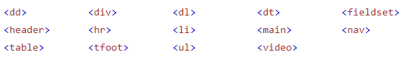
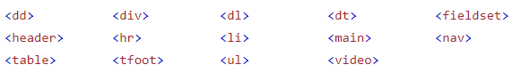

HTML - Bevezetés
- Tim Berners-Lee és csapata találta fel 1991-ben.
- A HTML a HiperSzöveg JelölőNyelv (HyperText Markup Language) rövidítése.
- HiperSzöveg (HyperText): sima szöveg más erőforrásokra mutató hivatkozásokkal (link).
- JelölőNyelv (Markup Language): a tartalom részeit elemekbe (element), címkék (tag) közé csomagolja. Ezek az elemek mondják meg a böngészőnek hogyan jelenítse meg a weboldalt, azaz a HTML leírja egy weboldal tartalmának a struktúráját.
- Egy egyszerű HTML dokumentum szerkezete.
- <!DOCTYPE html>: az oldal a HTML5 szabványt követi.
- <html></html>: az oldal gyökéreleme. Ez tartalmazza "leszármazottként" a többi elemet.
- <head></head>: a "meta-elemeket" tartalmazó elem. Ezeknek az elemeknek a tartalma segíti a böngészőt a tartalom helyes megjelenítésében.
- <body></body>: ebben az elemben soroljuk fel a weboldal létrehozásához szükséges elemeket. Ezek tartalma adja meg az oldal szerkezetét.
- <title></title>: a weboldal címe. Ez jelenik meg az oldal fülén (tab), a böngésző címsorában (title bar),illetve ezen a néven kerül elmentésre a böngésző könyvjelzői közé valamint az előzményekbe.
- Egy HTML oldal képi megjelenítése.
- Feladat: Mentsd le és nyisd meg a linkhez tartalmazó HTML állományt egy szerkesztői környezetben (pl. Visual Studio Code). Old meg az ott megadott feladatokat!
-
Elem (element): a HTML
dokumentumok fő építőeleme. Három részből áll: nyitó címke
(opening tag), tartalom (content) és záró címke (closing tag).
A tartalom rész fog megjelenni a böngészőben.
MINDIG TEGYÜK KI A ZÁRÓCÍMKÉT!
- A HTML nem követeli meg a kisbetűs címkeneveket, de nagyon javasolt, mert például az XHTML viszont igen.
-
Az elemek egymásba ágyazhatóak. Lásd első kép.
Vigyázni kell a címkék helyes lezárási sorrendjére!
- Üres elem (empty element, void element): ebben az esetben csak nyitó címke van (itt zárom le az elemet, de nem kötelező: <tagname />). Nincs tartalom és záró címke! Pillanatnyilag ezek az üres elemek.
- Feladat: Mentsd le és nyisd meg a linkhez tartalmazó HTML állományt egy szerkesztői környezetben (pl. Visual Studio Code). Old meg az ott megadott feladatokat!
- Majdnem minden HTML elemnek van egy megjelenítési értéke (display). Amit bármikor meg tudunk változtatni.
-
Blokkszintű elem (block element):
- A blokkszintű elem mindig új sort kezd.
- A böngésző automatikusan tesz egy kis margót az elem elé és mögé.
- Mindig lefoglalja a rendelkezésre álló sort az elejétől a végéig.
- Blokkszintű elemek a HTML-ben. Legtöbbet használt: div
-
Beágyazott elem (inline element):
- Egy beágyazott elem soha nem kezd új sort.
- Annyi helyet foglal, amennyire szüksége van.
- Egy beágyazott elem nem tartalmazhat egy blokkszintű elemet!
- Beágyazott elemek a HTML-ben. Legtöbbet használt: span
- A sokat használt <br /> se nem beágyazott se nem blokkszintű elem.
- Feladat: Mentsd le és nyisd meg a linkhez tartalmazó HTML állományt egy szerkesztői környezetben (pl. Visual Studio Code). Old meg az ott megadott feladatokat!
-
Attribútum , tulajdonság (attribute):
- Minden HTML elemnek lehetnek.
- Ráadás információk a HTML elemekről.
- Mindig az elem nyitó címkéjében találhatóak.
- Rendszerint név="érték" (name="value") formában írjuk őket.
- A HTML nem követeli meg a kisbetűs attribútumokat, de nagyon javasolt, mert például az XHTML viszont igen.
-
Sokszor használt attribútumok:
- id: egy meghatározott elem kijelölésére.
- class: valamilyen szempontból összetartozó elemek kijelölésére.
- href (hypertext reference): a külső erőforrás URL címe vagy elérési útja (file path).
- src (source): egy kép, vagy szkript állomány URL címe vagy elérési útja (file path).
- alt (alternate text): alternatív szöveg, ha a kép valami miatt nem jelenik meg.
- width: a fénykép szélessége pixelben megadva.
- height: a fénykép magassága pixelben megadva.
- style: beágyazott stílushoz (inline style).
- title: kis felugró ablakban (pop-up) megjelenő kiegészítő, rövid, magyarázó szöveg, ha az elemre húzzuk az egeret.
- lang: az oldal nyelvének a meghatározása: nyelv (+ ország, dialektus) (lang="en-US").
- A HTML nem követeli meg, hogy az attribútumokat idézőjelek közé tegyük, de nagyon javasolt, mert például az XHTML viszont igen.
-
Néha mind az idézőjel, mind az aposztróf használata
kötelező!
- title="A nevem: 'The Mighty Man'" vagy
- title='A nevem: "The Mighty Man"'
-
Ha az attribútum értéke több szóból áll, lásd
title, akkor KÖTELEZŐ az
idézőjel.
- title=Ez egy felirat helytelen!
- title="Ez egy felirat" helyes!
-
Logikai attribútum (boolean attribute): főleg az űrlapok esetében vannak olyan attribútumok,
melyek értéke igaz vagy hamis. Ha igaz, akkor elegendő csak
az attribútum nevét kiírni.
-
<input type="text" required="required"
/>
vagy
<input type="text" required="true" /> helyett - <input type="text" required />
-
<input type="text" required="required"
/>
vagy
- Feladat: Legalább 10 attribútum segítségével hozz létre egy alap HTML oldalt! Mind a head, mind body elemben legyenek attribútumok. Mentsd le és nyisd meg a linkhez tartalmazó HTML állományt egy szerkesztői környezetben (pl. Visual Studio Code). Old meg az ott megadott feladatokat!
-
- HTML-ben a komment jelölésére a <!-- --> címkepár szolgál.
- Lehet egysoros vagy többsoros.
- Figyelmeztetéseket és emlékeztetőket helyezhetünk el a kódban.
- Bárhol elhelyezhető. Sor elején, sor végén vagy akár soron belül is.
- Kommentálás segítségével kódsorokat alakíthatunk kommentté. Ekkor a böngésző figyelmen kívül hagyja azokat, így egyfajta hibakeresést is tudunk végezni.
- Feladat: Mentsd le és nyisd meg a linkhez tartalmazó HTML állományt egy szerkesztői környezetben (pl. Visual Studio Code). Old meg az ott megadott feladatokat!
Alapvető dolgok:
HTML dokumentum alap felépítése:

HTML elem felépítése, megjelenítése:
Elemek megjelenítési értéke:

 



Attribútumok:


Kommentek: